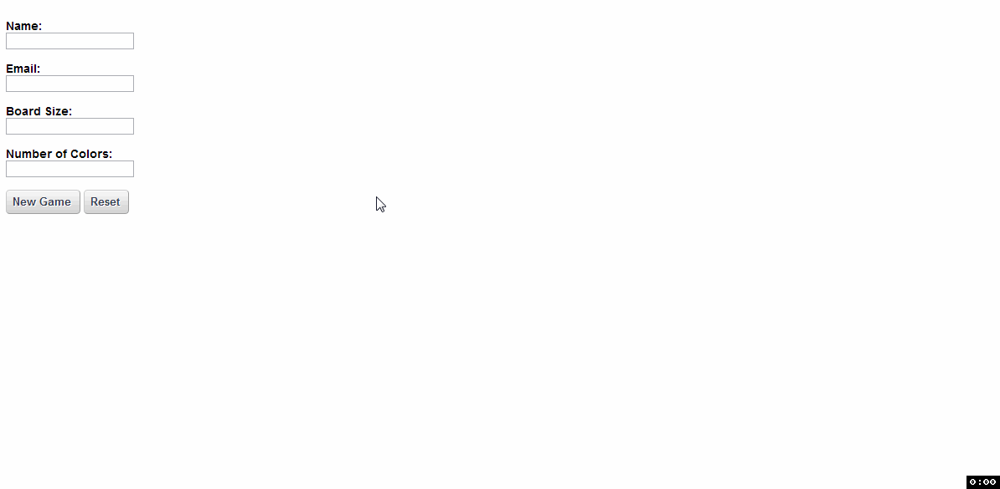

Making your own HTML/JavaScript game
In this exercise, you will use your recently-acquired knowledge of HTML, CSS, and JavaScript to create a simple game known as Flood-It. In this game, there is a grid of colored squares, and the player tries to fill the entire grid with a single color within a limited number of moves. The player does this by selecting a color, which will flood fill the grid with that color starting from the top left corner. To get a feel for the game, there is a GIF below that shows the ideal gameplay.

Before you actually create the game, we'd like you to have some practice using AlloyUI, a JavaScript library built by folks at Liferay that allows you to quickly create powerful HTML components. If you are not yet familiar with AlloyUI, browse through the tutorials and examples on the website, trying to understand how components work and how you would create them. Pay particular attention to:
Instructions
This section provides step-by-step instructions for creating the game. They have been divided into distinct steps so that you can test each piece of your code before moving on to the next one. As you write your code, be sure to obey Liferay's source formatting guidelines.
- Create a form with a Form Validator.
- Your form should have at least four fields.
- Two of these should be used by the player to input the desired board size and number of colors.
- Each field should be required and have some restriction on the format of its input.
- If you choose to use text boxes to input the board size and number of colors fields, make sure to require that the player enters reasonable values.[Tip 1]
- Your form should have a reset button and a submit button.
- Write a function that uses AlloyUI's Node module to generate a new game board and append it to your HTML document.[Tip 2] This function should be called when the form is submitted with valid input.[Tip 3]
- Get the player's desired number of colors and board size from the appropriate form fields.[Tip 4][Tip 5]
- Create a counter to keep track of the number of moves remaning.[Tip 6]
- Create a button that displays the game rules when pressed.
- Create a button that will allow the player to change the game colors. It doesn't need to do anything when clicked yet.
- Create a set of colored buttons that will call a function to flood fill the board when clicked.[Tip 7] Don't worry about the function definition yet.
- Generate the game board.[Tip 8]
- Initialize a list of the default colors that will be used in the game.
- Set the background color of each cell in the board to a randomly chosen color from the list.[Tip 9][Tip 10]
When you are finished, apply CSS styles (in a separate stylesheet) so that your game is aesthetically pleasing.
- Write two functions to perform the flood fill operation.
- Let Function A be the one that is called when any of the colored buttons is pressed. Function A should check to make sure the player is not out of moves, has not already won, and did not select the color that is currently that of the top left cell. If these conditions are satisfied, it should passs the color of the top left cell as one of the arguments to Function B.
- Function B will be recursive, meaning that it will repeatedly call itself until it has finished executing. This function should, given a cell, check the current cell to see if its color is equal to the inital color of the top left cell. If so, it should set the color of the current cell to the color that was selected and call itself on all four neighboring cells. (Beware of infinite recursion! It will crash your browser. The function should also not attempt to fill cells that are outside of the board.)[Tip 11][Tip 12]
- When Function B has terminated, Function A should decrement the number of moves remaining and check whether or not the player has won or lost. If the player has won or lost, the player should be notified and further attempts to change the color of squares on the board should not do anything.
At this point, your game should be fully functional except for the ability to change the colors.
- Write code to allow the player to change the colors being used in the game. [Tip 13]
- Write a function that places an overlay mask over the game. This function should add a save button, a cancel button, and an appropriate number of color pickers and place them over or next to the mask. The color pickers should be initialized so that their initially-selected colors are the same as those currently being used in the game.[Tip 14] This function is the one that should be called when the player presses the button to change the colors.
- Write a helper function that checks whether any two of the selected colors are identical or very similar.[Tip 15] (It is up to you to define similarity and determine an appropriate cutoff level.)
- When the cancel button is pressed, the code should check whether all of the original colors are sufficiently different. If so, the overlay mask should be hidden.
- When the save button is pressed, the code should check whether all of the selected colors are sufficiently different.[Tip 16] If so, the overlay mask should be hidden, the appropriate colors on the board should be changed, and the list of colors should be updated.
- The code should also check for similar colors when a new game is created. This can happen if additional colors were added and one of the original colors was changed to be similar to one of the new ones.
- Apply CSS styles so that all elements are positioned well. It would also be beneficial to be able to see the colors that have been selected after the colorpickers have been minimized.[Tip 17][Tip 18]
Tips
This section contains tips that you will probably find useful as you build your game. Following these tips is optional because there are multiple ways to perform these tasks, but taking the advice below will probably make these tasks easier.
- ^ Consider using the
range attribute in the rules for the form validator. This attribute uses the same syntax as rangeLength and specifies a minimum and maximum numeric value that a field can take.
- ^ Consider hard-coding a
<div> element into the <body> of your HTML document to contain the game. This way, you can use the .empty() method to destroy the board every time you start a new game.
- ^ One way to cause an action to be taken on submit is by adding an
action attribute to your <form> element, as follows:
<form action="javascript:functionNameGoesHere()" id="idGoesHere">
- ^ Take a look at
Y.one(), the .get() method, and parseInt().
- ^ We suggest that you declare the number of colors and board size as global variables because you will need them later on.
- ^ A suitable formula for the initial number of moves is 0.3 times the board size times the number of colors, rounded down. Feel free to modify this formula if you believe that it is imbalanced.
- ^ One way to cause one of these buttons to execute a function when clicked is to add an
onclick attribute to your HTML element, as follows:
<td onclick="functionNameGoesHere(#)">
In this case, # would be replaced by an index corresponding to the color that the player desires to flood fill the board with. You can use the .toString() method and string concatenation to appropriately append the index to the function call.
- ^ The simplest way to generate the board is by making a table with N rows and N cells per row, where N is the player's desired board size. Node and the creative use of loops will allow you to do this in a few lines of code.
- ^ AlloyUI objects have a
.setStyle() method.
- ^ You may want to have a helper function that returns a single cell of the board if you pass in the row and column. In this function, you will either need to use the
:nth-child() selector or have attributes in your cells that specify the row and column.
- ^ If you get stuck and need a better explanation of recursion and the flood fill algorithm, try this link.
- ^ You may find yourself needing to compare colors in
rgb(#, #, #) format with colors in hexadecimal format. You may use the function below to convert colors in rgb(#, #, #) format to hexadecimal. Please note that this function will return hexadecimal values using lower-case letters, and string comparison is case-sensitive.
function colorToHex(color) {
if (color[0] === '#') {
return color;
} // if the number is already in hexadecimal, do nothing
var digits = /(.*?)rgb\((\d+), (\d+), (\d+)\)/.exec(color);
// use a regexp to separate the r, g, and b values
var blue = parseInt(digits[4]);
var green = parseInt(digits[3]);
var red = parseInt(digits[2]);
// convert these values from strings to numbers
var hexNum = 16777216 | blue | (green << 8) | (red << 16);
// use shifting and the bitwise OR operator to form a hex number
return '#' + hexNum.toString(16).slice(1);
} // convert it to a string and put a '#' in front
- ^ Think about how you will structure the code related to the overlay mask before you write it. One way to do it would be to have a large block of code that uses AlloyUI's Color Picker and Overlay Mask modules. Within this block, you can have a section where you create the mask and HTML elements that will be added to the game, a section where you specify the actions to be taken when the save and cancel buttons are pressed, and a function to display the mask and create the appropriate number of color pickers. Outside of this block, you can have a global function that checks if any of the colors are similar.
- ^ To set the color of a color picker in the code, call the
.set() method using 'hex' as the first argument and a string representing a hexidecimal color without the '#' prefix.
- ^ You may want to give the function that checks whether the colors are sufficiently different an argument that tells it whether to use the list of current colors or the colors stored in the color pickers.
- ^ The Color Picker object has a
.get() method. If you call it using 'rgb' as the argument, what is returned?
- ^ To be able to see the colors that have been selected, you will need a function handler that sets the background color of an element when the
'colorChange' event is fired. To see how this works, check out this example. You will want to use .after() rather than .on() to avoid a 1-color delay in changing the color of your indicator element.
- ^ If your color pickers are stored in an array, your event handler function will not have access to the array index. To get around this, you can, using the
.set() method, give each color picker an attribute that stores the position of that color picker in the array. You can then retrieve this index inside the event handler function by calling this.get().
Good luck!